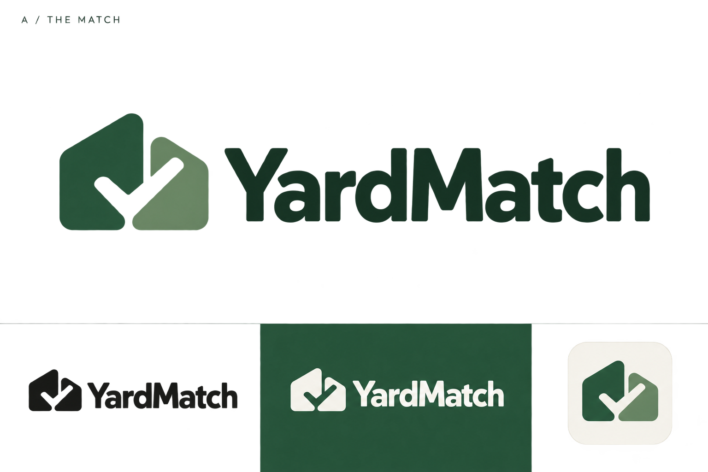
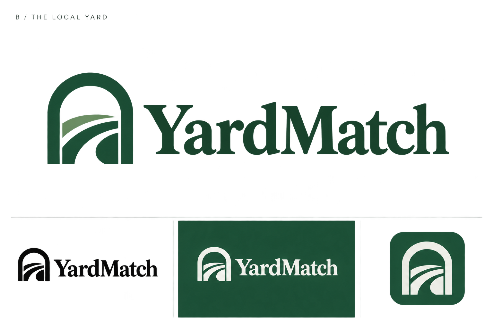
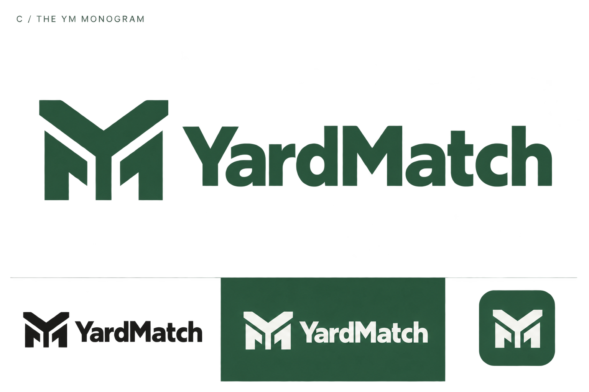
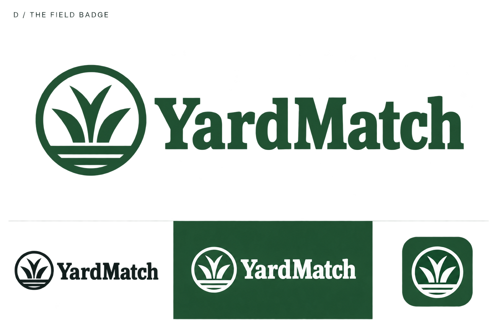

A / The Match
Friendly, confident and focused on connecting the right people.
Choose the direction. Then refine the identity.

Friendly, confident and focused on connecting the right people.

Warm and considered, with a welcoming neighborhood feel.

Bold and compact, with a strong standalone app symbol.

Grounded and established, with a landscaping and workwear character.